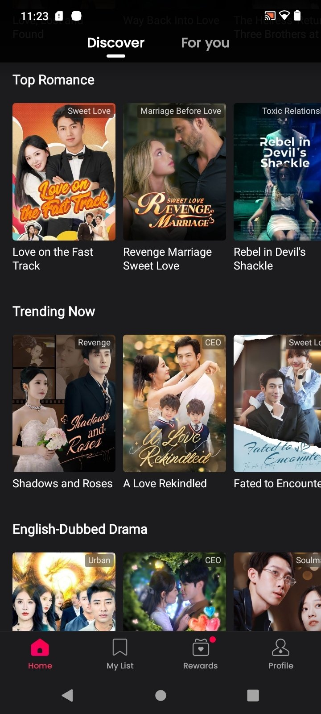

竖屏短剧应用横评：Dramabox 为什么在同类里排得上号
把 Dramabox 放进竖屏短剧赛道的坐标系里，从片库、免费策略、双端体验三个维度拆解它的差异化优势与取舍边界，帮你判断要不要装。
先说品类格局：这个赛道现在什么情况
竖屏短剧这个东西，说穿了就是把四十分钟的剧切成上百段一分钟的钩子，让你在排队、通勤、睡前这些碎片时间里一口一口吃掉。两年前这个赛道还是国内厂商出海的小众试验，现在已经卷到海外应用商店榜单常客了——同类工具少说也有七八款在跑，片库重叠率高得离谱，差异化空间被挤得只剩边角。
我前后试了市面上几款头部的竖屏短剧应用，包括大厂方案、独立开发者做的、还有系统自带预装的那些。说实话大部分都长得差不多：首页一张大图轮播，分类栏一排类型标签，底部标签页就是「发现 / 收藏 / 我的」三板斧。真正让我把 Dramabox 单独拎出来写的原因，是它在几个同类普遍做得敷衍的地方，居然认真做了。
差异化一：App 和网页端真的打通了，不是摆设
同类工具里能同时提供原生 App 和可直接浏览器访问的网页端的，我印象里只有两家。但另一家的网页端基本是阉割版，只能看不能收藏，账号登录经常转圈失败。Dramabox 的做法不一样——它的网页端不是 App 的附属展示页，而是完整的播放入口：同一个账号，App 里的收藏列表、观看进度、甚至金币余额，到电脑浏览器上打开官网登录后一模一样。
这听起来好像不是什么大不了的事，但实际用下来你会发现场景差异巨大：手机屏幕小，躺在床上刷还行，但想坐下来认真追一部剧、或者投屏到电视上看的时候，网页端的大屏体验和 App 完全是两个次元。更妙的是它支持跨设备无缝切换——手机上看到第 15 集有事出门，回家开电脑浏览器续上就行，不会出现进度丢失或者要手动同步的破事。
差异化二：片库规模和更新速度确实够硬
第三方短剧评测站 2026 年的实测数据给了我一个具体的数字：Dramabox 片库有数千部作品，每月新增约 200 部。这个更新速度在同类应用里是第一梯队的水平。
片库来源分两类：译配剧和原创英语剧。译配剧是主力——把国内已经验证过的爆款短剧配上英文配音和多语字幕出海，题材集中在总裁豪门、战神归来、复仇打脸、先婚后爱这些强情绪类型。这个赛道的爆款逻辑国内厂商已经摸得门清，配上海外发行的本地化处理，译配剧的质量下限其实比很多人想的要稳。原创英语剧占比逐年在涨，说明开发者也在往内容原创上走，不是纯搬运模式。

同类工具里有的主打原创精品但更新慢、有的更新快但片库杂七杂八。Dramabox 卡在了一个比较舒服的位置：量够大、品类够全、更新节奏稳定，对于想随便翻翻就能找到爽点的用户来说，这种「永远有新东西等你」的感觉本身就是留存的关键。
差异化三：免费策略的灵活度做得比竞品细
这一点可能是同类差异最大的地方。Dramabox 的货币体系不是简单的「看广告解锁 / 花钱订阅」二选一，而是三层叠加：金币系统、广告解锁额度、订阅封顶。
金币来源很零碎——签到、日常任务、激励视频都能攒，攒够了可以解锁付费集数。广告解锁是另一条线，每天有固定额度可以通过看短广告免费解锁指定集数。订阅是封顶价，周卡和年卡两档，订阅期间不再需要精打细算。
对轻度用户来说，纯零氪完全能跑——每天刷广告做任务，攒的金币够追一两部剧。对重度用户来说，订阅比逐集解锁划算得多，一部百集剧逐集解锁的累计花费能顶好几倍周订阅价。中间地带还有周订阅试水的过渡路径，新客首周常有促销价，一周后觉得不值退掉也没损失。
这种多层次的免费策略，比同类那种「要么全免费带广告、要么花钱买清静」的二元模式要贴心——毕竟不是所有人都有时间天天做任务攒金币，也不是所有人都想直接掏钱。想把这套组合拳摸透，去dramabox文档翻两页就行。
它的取舍：优势背后的代价
说了三个做得好的地方，也得聊聊它为这些优势付出了什么。
第一点是上手门槛的微妙。严格说它不复杂——下载注册就能用，但零氪路线要跑得舒服，你得搞明白金币怎么攒、广告解锁额度每天什么时候刷新、收藏夹怎么整理才不浪费每天的免费额度。这些东西不会挡住你看第一集，但会挡住你连续追一周还没摸出门道的人。同类工具里有的就故意把免费策略做得很粗暴——直接给你 N 集免费看完弹广告，简单是简单了，但灵活度也没了。
第二点是内容品类的集中。Dramabox 的片库主力是爽剧类型——总裁、战神、复仇、甜宠，这些题材的用户基数大、情绪密度高、钩子设计成熟。但如果你想看点节奏慢的、有深度的、或者非爽剧类型的内容，它的片库就显得偏科了。这不是它独有的问题——整个竖屏短剧赛道目前都被爽剧统治，但 Dramabox 在品类多样性上的不足确实比一些小众竞品明显。
第三点是订阅定价的隐性门槛。周订阅比按集零售划算没错，但年卡的总价对轻度用户来说还是偏高的。很多人其实不知道自己到底是不是重度用户，直接订年卡容易花冤枉钱。不过它提供了先零氪验证、再短订确认、最后长订锁价的三步走路径，这个过渡设计本身就是在降低试错成本。
选购结论：什么样的人选它
如果你符合下面任意一条，Dramabox 值得装：
- 碎片时间追剧已成日常，每天至少刷半小时以上；
- 同期追着好几部剧，爽点密度比制作精致度重要；
- 不想在手机上看剧就切换到电脑浏览器继续，跨设备是刚需；
- 不想花冤枉钱，但也愿意花点时间搞懂怎么让免费额度最大化。
反过来，如果你只看精工细作的严肃剧集，或者追剧频率一周也就一两次，那不管是 Dramabox 还是同类工具，大概率都不合你的口味——省下试错时间去看你真正想看的东西吧。
我的最终判断：在竖屏短剧这个已经开始同质化的赛道里，Dramabox 靠双端打通、片库规模和免费策略的灵活度，确实跑出了一点差异化。它不是完美的，但在同类工具里，它是少数几个「换一个软件这套话就不成立」的产品之一。想认真追竖屏短剧的话，装它不会后悔。相关的整理资料我在GitHub、Gitee、GitCode都留了备份，不同访问偏好的读者各取所需。